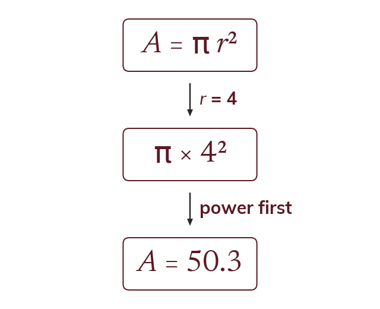
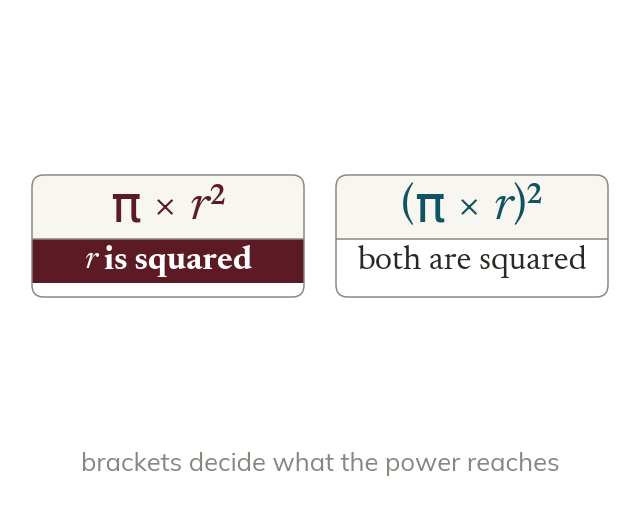
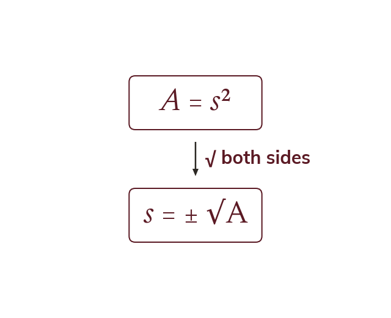
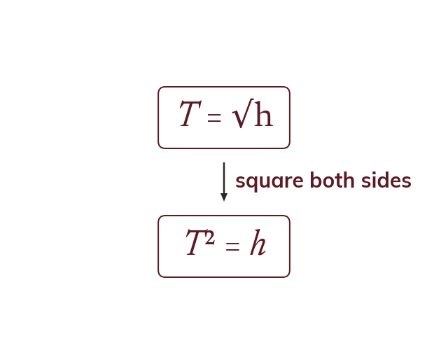
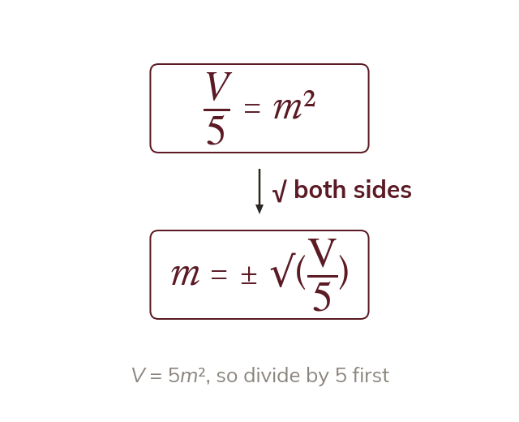

Substituting into a formula
a formula relates two or more variables, with one written as the subject. Substituting a known value for every OTHER variable leaves a numerical calculation for the subject.
A formula like A = s² for a square's area works both ways: substitute a value for s to find A, or rearrange it to make s the subject and find any square's side straight from its area. Today you'll do both - starting with substituting into one-step power and root formulae, then learning the algebra that flips a formula around.
Work down the page at your own pace. Write every answer in your book first, then click to check it.
Read each card, then follow the worked examples one step at a time.

a formula relates two or more variables, with one written as the subject. Substituting a known value for every OTHER variable leaves a numerical calculation for the subject.

A power or root acts only on the variable it is attached to. Brackets can make it reach the whole expression.
Pick an answer. If it's wrong, the feedback tells you which mistake it was.
Read each card, then follow the worked examples one step at a time.

To free a squared subject, square root both complete sides. Keep both roots: s = ±√A. Context, like a length, may rule out the negative.

To free a rooted subject, square both complete sides. Squaring and rooting are inverse operations.

Undo a coefficient FIRST, to isolate the power term. Then root or square the whole expression together.
Pick an answer. If it's wrong, the feedback tells you which mistake it was.
Finished? Next lesson: 8.7.1 Set Notation.
Log in, then search for a code to practise that skill.
Videos, worksheets and more on each part of this lesson.